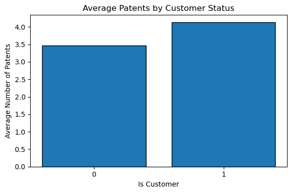
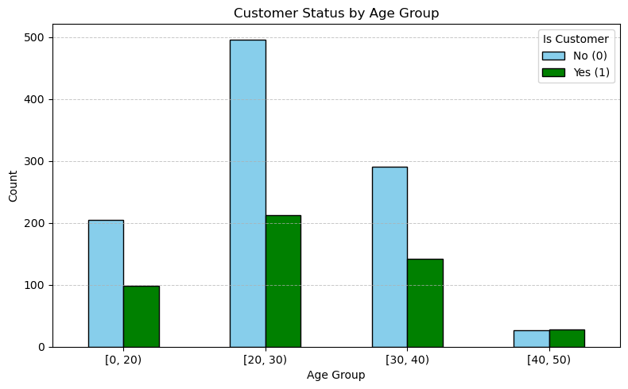
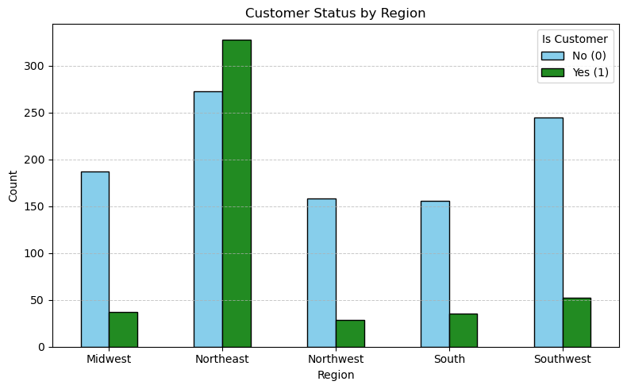
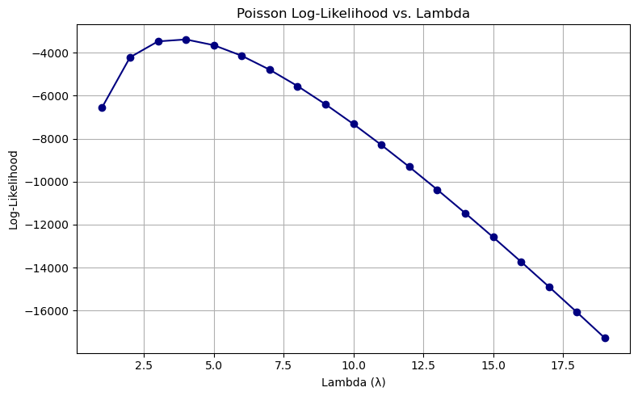
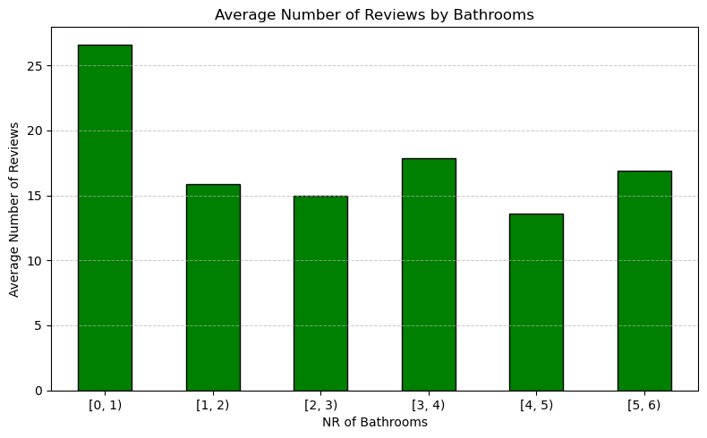
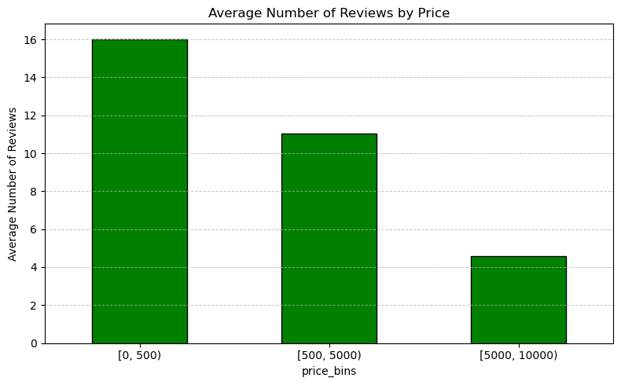

import pandas as pdimport matplotlib.pyplot as pltimport numpy as np
Matplotlib created a temporary cache directory at /tmp/matplotlib-c85owgi7 because the default path (/home/jovyan/.config/matplotlib) is not a writable directory; it is highly recommended to set the MPLCONFIGDIR environment variable to a writable directory, in particular to speed up the import of Matplotlib and to better support multiprocessing.
blueprint_hist = blueprint_hist.reset_index()# Create a histogram-style bar chartplt.figure(figsize=(6, 4))plt.bar(blueprint_hist['iscustomer'].astype(str), blueprint_hist['patents'], edgecolor='black')# Add labels and titleplt.xlabel('Is Customer')plt.ylabel('Average Number of Patents')plt.title('Average Patents by Customer Status')# Show the plotplt.tight_layout()plt.show()

blueprinty['age'].describe()
count 1500.000000
mean 26.357667
std 7.242528
min 9.000000
25% 21.000000
50% 26.000000
75% 31.625000
max 49.000000
Name: age, dtype: float64
blueprinty['age_bins']= pd.cut(blueprinty['age'], bins=[0, 20, 30, 40, 50], right=False)blueprint_hist_age =pd.crosstab(index=blueprinty['age_bins'], columns=blueprinty['iscustomer'],margins=True,margins_name='Total')display(blueprint_hist_age)plot_data_age = blueprint_hist_age.drop(index='Total', columns='Total')# Plotplot_data_age.plot( kind='bar', stacked=False, figsize=(8, 5), edgecolor='black', color =( 'skyblue','green',),)# Add labels and titleplt.xlabel('Age Group')plt.ylabel('Count')plt.title('Customer Status by Age Group')plt.legend(title='Is Customer', labels=['No (0)', 'Yes (1)'])plt.grid(axis='y', linestyle='--', linewidth=0.7, alpha=0.7)plt.xticks(rotation=0)plt.tight_layout()plt.show()
iscustomer
0
1
Total
age_bins
[0, 20)
205
98
303
[20, 30)
496
213
709
[30, 40)
291
142
433
[40, 50)
27
28
55
Total
1019
481
1500

blueprint_hist_region= pd.crosstab(index=blueprinty['region'], columns=blueprinty['iscustomer'],margins=True,margins_name='Total')blueprint_hist_regionplot_data_region = blueprint_hist_region.drop(index='Total', columns='Total')# Plotplot_data_region.plot( kind='bar', stacked=False, figsize=(8, 5), edgecolor='black', color=['skyblue','forestgreen'])# Add labels and titleplt.xlabel('Region')plt.ylabel('Count')plt.title('Customer Status by Region')plt.legend(title='Is Customer', labels=['No (0)', 'Yes (1)'])plt.grid(axis='y', linestyle='--', linewidth=0.7, alpha=0.7)plt.xticks(rotation=0)plt.tight_layout()plt.show()

import numpy as npfrom math import factorialdef poisson_distro(lmbda, y):return (np.exp(-lmbda) * (lmbda ** y)) / factorial(y)def poisson_likelihood(lmbda, y_array):return np.prod([poisson_distro(lmbda, y_i) for y_i in y_array])from scipy.special import gammalndef poisson_log_likelihood(lmbda, y_array): y_array = np.array(y_array)return np.sum(-lmbda + y_array * np.log(lmbda) - gammaln(y_array +1))
# Evaluate log-likelihoods across lambda valueslambda_vals = np.arange(1, 20)log_likelihoods = [poisson_log_likelihood(lmbda, blueprinty['patents'].values) for lmbda in lambda_vals]# Plotplt.figure(figsize=(8, 5))plt.plot(lambda_vals, log_likelihoods, marker='o', color='navy')plt.title("Poisson Log-Likelihood vs. Lambda")plt.xlabel("Lambda (λ)")plt.ylabel("Log-Likelihood")plt.grid(True)plt.tight_layout()plt.show()

import numpy as npfrom scipy.special import gammalndef poisson_log_likelihood_regression(beta, X, y):""" Log-likelihood function for Poisson regression. Parameters: - beta: array-like, shape (k,) - X: array-like, shape (n, k) ← includes intercept if desired - y: array-like, shape (n,) Returns: - Scalar: log-likelihood value """ X = np.array(X) y = np.array(y) beta = np.array(beta) beta = X @ beta # linear predictor lambda_ = np.exp(eta) # inverse link: ensures lambda_i > 0 log_lik = np.sum(-lambda_ + y * beta - gammaln(y +1))return log_lik
import numpy as npimport pandas as pdfrom scipy.optimize import minimizefrom scipy.special import gammaln# Step 1: Simulate a simple dataset (like blueprinty)np.random.seed(0)n =100age = np.random.randint(20, 70, size=n)region = np.random.choice([0, 1], size=n) # binary regionis_customer = np.random.choice([0, 1], size=n)# Design matrix with intercept, age, age^2, region, is_customerX = np.column_stack(( np.ones(n), # intercept age, age**2, region, is_customer))# True beta (for simulation purposes)beta_true = np.array([1.0, 0.02, -0.0002, 0.3, 0.5])# Simulate counts from Poisson modeleta = X @ beta_truelambda_ = np.exp(eta)y = np.random.poisson(lambda_)# Step 2: Define the Poisson regression log-likelihooddef poisson_log_likelihood_regression(beta, X, y): eta = X @ beta lambda_ = np.exp(eta)return np.sum(-lambda_ + y * eta - gammaln(y +1))# Step 3: Maximize the log-likelihoodinitial_beta = np.zeros(X.shape[1])result = minimize( fun=lambda b: -poisson_log_likelihood_regression(b, X, y), x0=initial_beta, method='BFGS')# Output the estimated coefficientsbeta_mle = result.xlog_lik_at_mle =-result.funprint("Estimated Coefficients (MLE):", beta_mle)print("Log-Likelihood at MLE:", log_lik_at_mle)
/tmp/ipykernel_48080/4112774673.py:33: RuntimeWarning: overflow encountered in exp
lambda_ = np.exp(eta)
/opt/conda/lib/python3.12/site-packages/scipy/optimize/_numdiff.py:590: RuntimeWarning: invalid value encountered in subtract
df = fun(x) - f0
/tmp/ipykernel_48080/4112774673.py:33: RuntimeWarning: overflow encountered in exp
lambda_ = np.exp(eta)
_todo: Use your function along with R’s optim() or Python’s sp.optimize() to find the MLE vector and the Hessian of the Poisson model with covariates.
Specifically, the first column of X should be all 1’s to enable a constant term in the model, and the subsequent columns should be age, age squared, binary variables for all but one of the regions, and the binary customer variable.
Use the Hessian to find standard errors of the beta parameter estimates and present a table of coefficients and standard errors._
def poisson_log_likelihood_regression(beta, X, y):# Ensure all inputs are NumPy arraysifnotisinstance(beta, np.ndarray): beta = np.asarray(beta)ifnotisinstance(X, np.ndarray): X = np.asarray(X)ifnotisinstance(y, np.ndarray): y = np.asarray(y) eta = X @ beta lambda_ = np.exp(eta)return np.sum(-lambda_ + y * eta - gammaln(y +1))
bathroom_hist = pd.pivot_table(airbnb, index='bathrooms_bins', values='number_of_reviews', aggfunc=['mean'],margins=True,margins_name='Total')display(bathroom_hist)plot_data_bathrooms = bathroom_hist.drop(index='Total')# Plotplot_data_bathrooms.plot( kind='bar', stacked=False, figsize=(8, 5), edgecolor='black', color =('green',),)# Add labels and titleplt.xlabel('NR of Bathrooms')plt.ylabel('Average Number of Reviews')plt.title('Average Number of Reviews by Bathrooms')plt.legend().set_visible(False)plt.grid(axis='y', linestyle='--', linewidth=0.7, alpha=0.7)plt.xticks(rotation=0)plt.tight_layout()plt.show()
/tmp/ipykernel_48080/364120488.py:1: FutureWarning: The default value of observed=False is deprecated and will change to observed=True in a future version of pandas. Specify observed=False to silence this warning and retain the current behavior
bathroom_hist = pd.pivot_table(airbnb, index='bathrooms_bins', values='number_of_reviews', aggfunc=['mean'],margins=True,margins_name='Total')
mean
number_of_reviews
bathrooms_bins
[0, 1)
26.604061
[1, 2)
15.846360
[2, 3)
14.943998
[3, 4)
17.843854
[4, 5)
13.571429
[5, 6)
16.923077
Total
15.837927

price_hist = pd.pivot_table(airbnb, index='price_bins', values='number_of_reviews', aggfunc=['mean'],margins=True,margins_name='Total')display(bathroom_hist)plot_data_price = price_hist.drop(index='Total')# Plotplot_data_price.plot( kind='bar', stacked=False, figsize=(8, 5), edgecolor='black', color =('green',),)# Add labels and titleplt.xlabel('price_bins')plt.ylabel('Average Number of Reviews')plt.title('Average Number of Reviews by Price')plt.legend().set_visible(False)plt.grid(axis='y', linestyle='--', linewidth=0.7, alpha=0.7)plt.xticks(rotation=0)plt.tight_layout()plt.show()
/tmp/ipykernel_48080/3684250169.py:1: FutureWarning: The default value of observed=False is deprecated and will change to observed=True in a future version of pandas. Specify observed=False to silence this warning and retain the current behavior
price_hist = pd.pivot_table(airbnb, index='price_bins', values='number_of_reviews', aggfunc=['mean'],margins=True,margins_name='Total')
mean
number_of_reviews
bathrooms_bins
[0, 1)
26.604061
[1, 2)
15.846360
[2, 3)
14.943998
[3, 4)
17.843854
[4, 5)
13.571429
[5, 6)
16.923077
Total
15.837927

import seaborn as snsfrom statsmodels.api import GLMfrom statsmodels.genmod.families import Poisson# Step 1: Exploratory Data Analysis (EDA)# Distribution of the number of reviewssns.histplot(airbnb['number_of_reviews'], bins=30, kde=True)plt.title('Distribution of Number of Reviews')plt.xlabel('Number of Reviews')plt.ylabel('Frequency')plt.show()# Correlation heatmap for numerical variablesnumerical_cols = ['days', 'bathrooms', 'bedrooms', 'price', 'number_of_reviews']sns.heatmap(airbnb[numerical_cols].corr(), annot=True, cmap='coolwarm')plt.title('Correlation Heatmap')plt.show()# Scatter plot of price vs. number of reviewssns.scatterplot(x='price', y='number_of_reviews', data=airbnb)plt.title('Price vs. Number of Reviews')plt.xlabel('Price')plt.ylabel('Number of Reviews')plt.show()# Step 2: Handle Missing Values# Drop rows with missing values in relevant columnsrelevant_cols = ['number_of_reviews', 'price', 'bathrooms', 'bedrooms']airbnb_cleaned = airbnb.dropna(subset=relevant_cols)# Step 3: Build a Poisson Regression Model# Define dependent and independent variablesX = airbnb_cleaned[['price', 'bathrooms', 'bedrooms']]X = sm.add_constant(X) # Add intercepty = airbnb_cleaned['number_of_reviews']# Fit the Poisson regression modelpoisson_model = GLM(y, X, family=Poisson()).fit()# Step 4: Interpret Model Coefficientsprint(poisson_model.summary())# Interpretation:# The coefficients represent the log change in the expected number of reviews for a one-unit increase in the predictor.# For example, if the coefficient for `price` is -0.01, it means a one-unit increase in price decreases the expected number of reviews by approximately 1% (exp(-0.01) ≈ 0.99).
import seaborn as snsimport matplotlib.pyplot as pltimport statsmodels.api as smfrom statsmodels.api import GLMfrom statsmodels.genmod.families import Poisson# Step 1: Exploratory Data Analysis (EDA)# Drop rows with missing values across all relevant columns (before plotting)eda_cols = ['number_of_reviews', 'price', 'bathrooms', 'bedrooms', 'days']airbnb_eda = airbnb.dropna(subset=eda_cols)# Distribution of the number of reviewssns.histplot(airbnb_eda['number_of_reviews'], bins=30, kde=True)plt.title('Distribution of Number of Reviews')plt.xlabel('Number of Reviews')plt.ylabel('Frequency')plt.show()# Correlation heatmap for numerical variablesnumerical_cols = ['days', 'bathrooms', 'bedrooms', 'price', 'number_of_reviews']sns.heatmap(airbnb_eda[numerical_cols].corr(), annot=True, cmap='coolwarm')plt.title('Correlation Heatmap')plt.show()# Scatter plot of price vs. number of reviewssns.scatterplot(x='price', y='number_of_reviews', data=airbnb_eda)plt.title('Price vs. Number of Reviews')plt.xlabel('Price')plt.ylabel('Number of Reviews')plt.show()# Step 2: Clean data by dropping rows with missing values in model inputsrelevant_cols = ['number_of_reviews', 'price', 'bathrooms', 'bedrooms']airbnb_cleaned = airbnb.dropna(subset=relevant_cols)# Step 3: Build a Poisson Regression Model# Define dependent and independent variablesX = airbnb_cleaned[['price', 'bathrooms', 'bedrooms']]X = sm.add_constant(X) # Add intercepty = airbnb_cleaned['number_of_reviews']# Fit the Poisson regression modelpoisson_model = GLM(y, X, family=Poisson()).fit()# Step 4: Interpret Model Coefficientsprint(poisson_model.summary())